Why we graph data
Graphs serve two distinct purposes in statistics, both of which are very important: 1) guiding your own data analysis and interpretation, and 2) presenting and communicating your results to others. For convenience, we'll refer to the graphs used for these two purposes as statistical graphs and summary graphs, respectively.
Statistical graphs help us understand the data we are analyzing better. We will focus today on histograms as examples of statistical graphs (we will learn about additional ones, like normal probability plots and residual plots, later in the semester).
Summary graphs are for communicating results, and we have to choose the right graph so that we can convey our results accurately. The choice of which summary graph type we use is based in part on the type of variables we are displaying, and in part on what we learn about our data from our statistical graphs. So far we've learned about one summary graph type, the interval plot (in which a mean and an error bar are used to illustrate the central tendency and dispersion in the data), and we will learn several others now.
Graphs are often the simplest, clearest way of presenting results, and can be a very powerful way of communicating our findings to others. However, graphs can also be used in a way that obscures information, and can be misleading if misused (graphs are a great way to "lie with statistics", whether you mean to or not).
In spite of their potential for misuse, graphs should be used routinely. I strongly recommend that you never analyze data, or try to interpret a result, without thoroughly exploring the data graphically first - it will save you from making big mistakes of interpretation. So, whatever else you do, always LOOK AT YOUR DATA!
Statistical graphs help you make good choices in your analysis
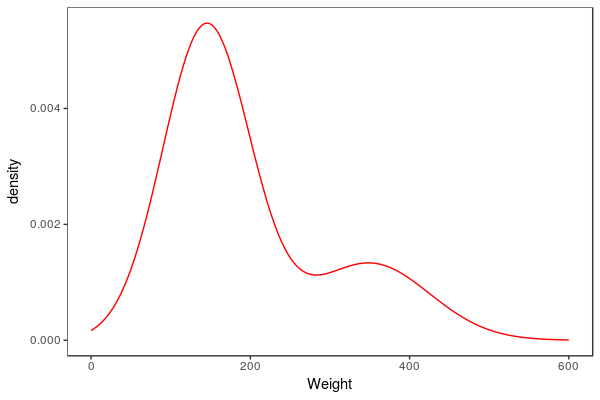A variable like weight of bears is a continuous numeric variable, which can take any number on the number line. If we had complete information about the distribution of weights we would expect to see a smooth curve like the one to the left. The y-axis is labeled "density", which is a measure of how common each weight is. Adult male bears are much bigger than the adult females and juveniles, so we see a second mode at about 360 kg where the adult males are. The larger mode is made up of adult females and juveniles of both sexes.
Unless we are using a computer simulation we never know what the smooth curve for the distribution of a continuous variable actually looks like, and we can only approximate them based on the information we have in a data set. One of the graphical methods we use for approximating the shape of the smooth curve underlying the data is to use a histogram.
We saw histograms before when we learned to diagnose the shape of a distribution so that we could select the right numerical summary. Now we will delve deeper into the choices we get to make in constructing histograms, and how those choices affect how well we approximate the variable's distribution.
| 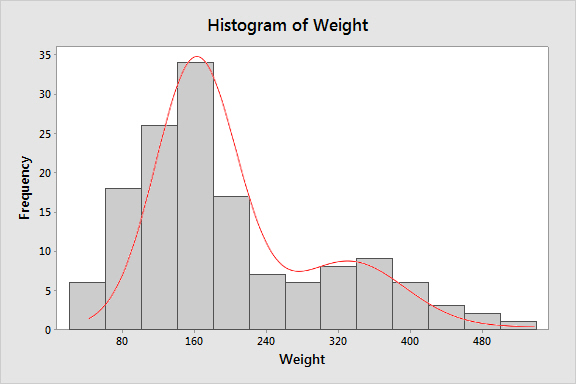
If we use MINITAB to make a histogram from the 143 bear weights we have to work with, we get a histogram that looks like the one to the left (the smooth curve is superimposed here to help you envision what you are trying to approximate, but it won't appear when you make your own). The number of bins MINITAB uses is determined by a statistical rule of thumb, which is based on the number of data points in the data set. In this graph there are 13 bins, each 40 kg wide. Ideally, a histogram will closely approximate the shape of the underlying distribution of the variable, including any skew or more than one mode, with a minimum of raggedness in the profile. This histogram is very nice in that way - it is possible to see the small second mode at 360 kg, and the bar heights make a nice, smooth profile across the top of the bars that closely follows the smooth curve. From this histogram we can easily see this distribution is bimodal (i.e. has two modes). But, keep in mind that we are breaking up a continuous variable on the x-axis into bins in order to count frequencies of data points, and the choice of where to put the bins is up to us. If you click on the image you'll see what would happen if we used bins that were still 40 kg wide but started 20 units lower. The overall impression is similar, but the profile is not identical to the one before, and the second mode shows up at 340 kg instead of 360 kg. The histogram's profile is still a reasonable approximation of a smooth curve. |
| 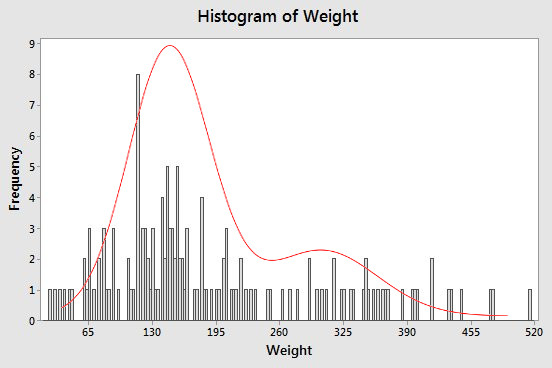
The rule of thumb MINITAB uses for picking the number of bins works well most of the time, but we don't have to accept the default - the choice is up to us. If you look at the default MINITAB histogram above the bars are so wide that they look like stair steps rather than a smooth curve. If we had more, narrower bins we would have smaller steps, and could follow the smooth curve more closely. Provided, that is, that the sample size was large enough. If we increase the number of bins for the sample size we have, like in the histogram to the left, instead of following the underlying smooth curve better we get a very jagged profile. This happens because we are getting lots of bars with heights of 1 because only one data value falls inside of them, many with heights of 0 with no points inside of them at all, and the occasional bar with a height other than 0 or 1 due to chance clustering of small numbers of data points. The bimodality of the data isn't obvious anymore, and the jaggedness of the profile makes it difficult to judge the shape of the distribution at all. Using too few bins is also a problem. If you click on the graph you'll see what the histogram looks like when only 3 bins are used. The profile is nice and smooth, but the bins are so wide that the second mode isn't visible anymore. The data look like they may be right-skewed, but only one mode is shown. |
To sum up: a good histogram is one that shows the important features of a data set, such as its shape, and presence of more than one mode. This means picking a number of bins that smooths the data enough, but not too much. Bigger sample sizes can support a larger number of bins, and MINITAB picks a default number that balances the number of bins against the sample size. However, if the default MINITAB histogram looks very ragged in profile, or has some gaps between bars, you might try reducing the default number. If the bins are very wide such, you might try using more and see how your impression of the shape changes. The rules of thumb for optimal numbers of bins are good starting points, but you may need to change them to suit your purposes.
Summary graphs
We'll move on now to summary graphs. As you now know, the kind of numeric summary you should use depends on the variable type, and the same is true for graphs.
Summary graphs for a single categorical variable
Recall that the best summary for a categorical variable is either the frequency of each level, or the relative frequency of each level. If we had some data on bears from a study of a wild population conducted over several years, we could count up how many bears were observed each month during the course of the study, like so:
| Month | Frequency | Relative frequency |
|---|---|---|
| April | 13 | 0.091 |
| May | 9 | 0.063 |
| June | 7 | 0.049 |
| July | 16 | 0.112 |
| August | 34 | 0.238 |
| September | 31 | 0.217 |
| October | 19 | 0.133 |
| November | 14 | 0.098 |
Frequencies or relative frequencies of levels of a categorical variable are usually illustrated with one of the following graphs:
| Graph type | Example | Explanation |
|---|---|---|
| Bar chart of frequencies |
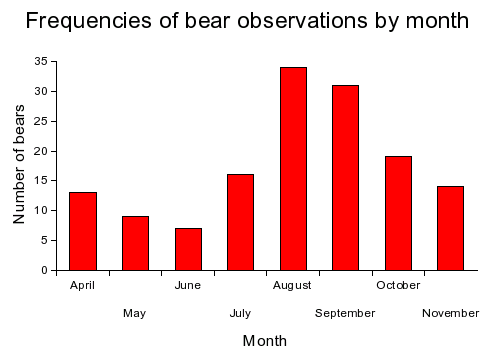 |
Bar charts have categorical x-axes. Since we have sorted the months in calendar order (rather than alphabetically), this is showing the data as an ordinal variable. A nominal variable could also be displayed this way, but the sort order on the categories would be arbitrary; usually, the x-axis categories are sorted by frequency to make the graph look nicer, and to make it easier to see how the frequencies compare among the nominal levels. |
|
Bar chart of relative frequencies |
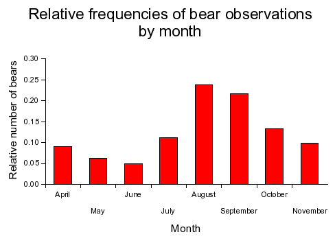 |
We can use the same graph on relative frequencies, and all that changes is the y-axis scaling.
This graph looks the same as the previous one, but the y-axis gives us the proportion of observations in each month rather than the number of observations in each month. |
|
Pie chart |
Relative frequencies of bears observed by month. 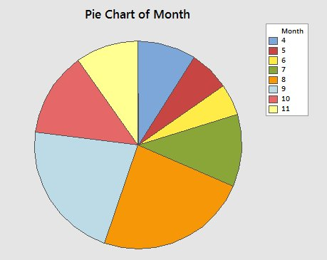 |
The other way to plot relative frequencies is a pie chart. The area covered by each slice in the pie is proportional to relative frequency for the category, like so. Pie charts should only be used to represent composition data - that is, data that can be interpreted as proportions of a total. Pie charts are okay, but notice that you lose the y-axis, so you can't easily tell what the relative frequency is for each category. The ordering of the months is maintained, but it's not obvious, and you need to compare the legend to the chart to be sure. The principle advantage of pie charts is that the sizes of the slices are very easy to compare visually. |
Summary graphs for numeric variables
Comparison between two or more groups of data is perhaps the most common activity of an experimental scientist. Graphically displaying grouped data is an excellent way to communicate experimental findings to others, and they help you interpret your results yourself. This first set of graphs are common choices for presenting grouped numeric data.
|
Graph type |
Example |
Explanation |
|---|---|---|
|
Bar chart of means. |
Average neck girth of bears by sex. 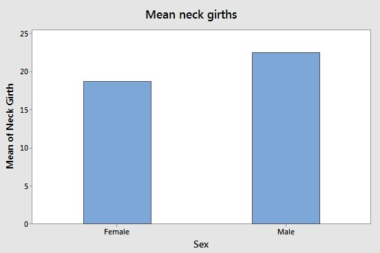 |
Bar charts can be used to graph means from a continuous variable. The height of the bar is the mean for the group. This is not a good choice for scientific work, though, because it doesn't include a measure of dispersion, like the interval plot, below, does. If a bar chart is used, error bars should be included, like those used in the interval plot, below. |
|
Interval plot of means. |
Average neck girth of bears by sex. 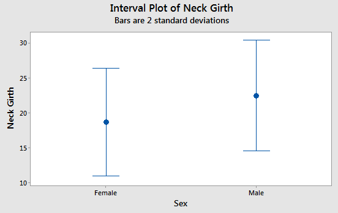 |
Interval plots add error bars around the means that show dispersion in the data. The mean is represented by a symbol in the middle, and the error bars are the T-shaped lines on either side of the mean. The error bars are 2 s wide, so 95% of data values should fall between the upper and lower ends of the error bars. Error bars are essential for scientific graphs - plotting means without error bars should be avoided.
|
|
Box plots. |
Chest girth by sex 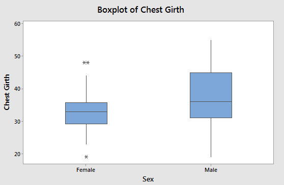 |
Box plots are composed of a box and two whiskers, and symbols beyond the whiskers indicating outliers. The upper end of the box is the third quartile (75th percentile), the bottom of the box is the first quartile (25th percentile), and the line in the middle of the box is the median, or second quartile (50th percentile). The whiskers extending above and below the box show the smallest and largest data value that is considered to not be an outlier - if there are no outliers then these are the minimum and maximum data values, and the box and whiskers together graphically displays the five number summary. Outliers are observations that are unusually large or small compared with the rest of the data for the group. Any data value that is more than 1.5 interquartile ranges from the first or third quartiles is an outlier, and is indicated with an asterisk. |
If the data are symmetrical, interval plots are a good choice, although boxplots are fine as well for symmetrical data.
If the data are skewed, boxplots are a better choice than interval plots, because boxplots show the skew. If the data are skewed, the box will be asymmetrical, and the longer half will point in the direction of the skew. For example, if the data are positively skewed, the third quartile will be further from the median than the first quartile is, and box will be longer in the positive direction. Conversely, if the data are negatively skewed the first quartile will be further from the median than the third quartile, and the box will be longer in the negative direction.
Given this, which direction is the skew in chest girths for males? Click here to see if you're right.
What about for females? Click here to see if you're right.
Graphs of relationships between variables
Some studies don't use a numeric, measured variable grouped into categories, so we will finish up with some graphs that are useful for showing relationships between various combinations of numeric and categorical variables.
|
Graph type |
Example |
Explanation |
|---|---|---|
|
Scatterplot |
Neck girth vs. chest girth. 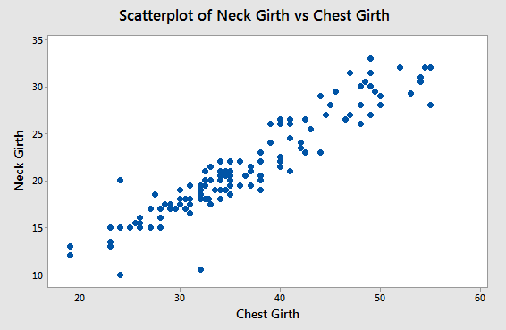 |
Scatterplots display relationships between two numeric variables. Each point no the graph is a single bear, which had its neck girth and chest girth measured. Each chest, neck pair of measurements is used as a Cartesian x,y coordinate that places the point on the graph. From this graph, you can see there is a fairly strong tendency for neck girth to increase as chest girth increases. |
|
Line graph |
Mean body weights of bears captured each month, grouped by sex. 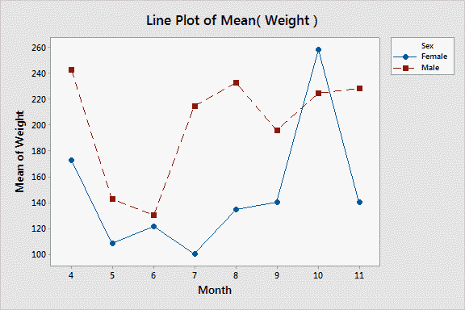 |
Line graphs are similar to scatter plots in appearance, but they are meant for series of successive measurements, usually over time. Time goes on the x-axis, and the measurements go on the y-axis. Because the data values are taken successively over time, lines are used to connect the dots so that the change over time is easier to see. In this case, two different groups are being displayed on the same graph (male and female) indicated with different plot symbols and different colors. This is actually a plot of three variables: weight, sex, and time. |
DANGER: line graphs are easy to misuse, and can be misleading
A couple of important points about line graphs:
- The lines between the points are not data values, they are interpolations between data values. So, even though they are the most conspicuous feature of the graph, they are not the measured data.
- It makes sense to connect dots if there is a natural ordering to the points that needs to be made clear. The most common case in which this is needed is when measurements are taken over time. However, if your data don't have a natural ordering along the x-axis, then connecting dots with lines is not appropriate.
- Although it's possible to produce graphs like the one above that use a numeric x-axis, in most programs (including MINITAB and Excel), "line graphs" have categorical x-axes.
|
The last point requires some additional explanation. The x-axis of the example of a line graph looks quantitative because all of the months are present in the data set, and the months are all equally spaced apart. But, if you click once on the image you'll see what the graph would look like if the data set was missing observations in the middle of the summer, from June to August (the graph titled "Line Plot of Mean(Weight) - no summer data"). You'll see that the numbers on the x-axis keep their even spacing even though the numbers jump from 4 to 5 to 9. To represent the actual spacing between the months, we need to use a scatter plot of the means, which uses a quantitative x-axis. If you click the image again (to get "Scatterplot of Weight vs. Month") you'll see the spacing between the months is now correct. |
You should also see why lines should be interpreted with some caution - the lines that connect month 5 to month 9 make it look like we know that there is a smooth transition between May and September weights, but that's not actually the case in the full data set. Sometimes in order to make the lines look better on the graph the points are omitted, which further obscures the data that the graph is actually based on. The lines may be the most conspicuous part of a line graph, but they are also the least reliable - the dots show where the actual data are.
Summary graphs for relationships between two categorical variables
Two categorical variables are summarized by counting frequencies of levels that both occur together - this is a cross tabulation of two categorical variables. For example, we could count up how many times males and females were observed each month of the bear study, which would give us a table like this:
| Month | Female | Male |
|---|---|---|
| April | 3 | 10 |
| May | 6 | 3 |
| June | 3 | 4 |
| July | 3 | 13 |
| August | 13 | 21 |
| September | 8 | 23 |
| October | 4 | 15 |
| November | 4 | 10 |
This table is thus showing us the relationship between sex and month. Let's look at some options for displaying cross-tabulated frequencies.
|
Graph type |
Example |
Explanation |
|---|---|---|
|
Grouped bar chart |
Number of observations of bears by month, grouped by sex 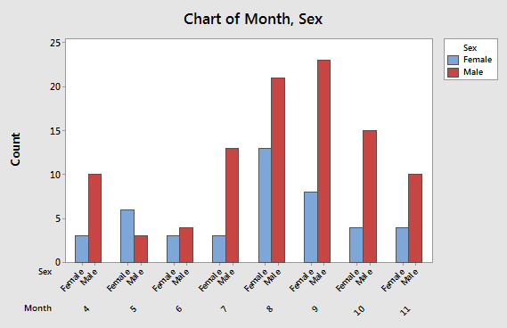 |
Each month is represented on the x-axis, and sexes are identified with different colored bars. The two bars representing males and females in the same month are touching, with spaces between months. This presentation allows you to compare frequencies of each sex captured each month by comparing bars of the same color. You can compare males to females within month by comparing bars that touch. |
|
Stacked bar chart |
Number of observations of bears by month, grouped by sex 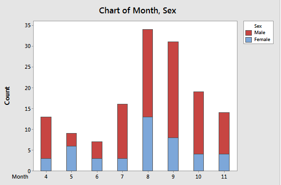 |
This presentation is nearly identical to the grouped bar chart, except now the frequencies for males and females are stacked on top of each other. Sex is still indicated by color. This makes comparisons of overall numbers by month easier, because the heights of each two-colored bar is the total number of observations. The relative number of females and males within a bar is still easy to tell, and the number of females is easy to read from the y-axis. However, the number of males is not as easy to get from this graph, since red portions of the bars start above 0. |
|
Stacked relative frequencies |
Relative frequencies of male and female bear observations by month. 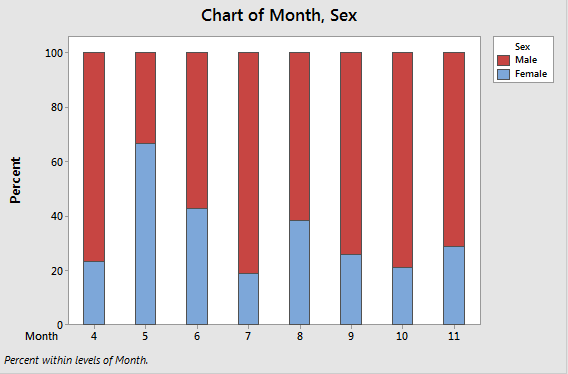 |
This presentation is like the stacked bar chart, but with relative frequencies of males and females within each moth. Each month's bar goes to 100%, so that changes in the relative number of males and females is evident. This approach allows you to focus on changes in relative numbers of each sex from month to month, but the actual number of observations isn't evident. |
Next activity
In the following activity, you will learn how to produce these graphs in MINITAB.